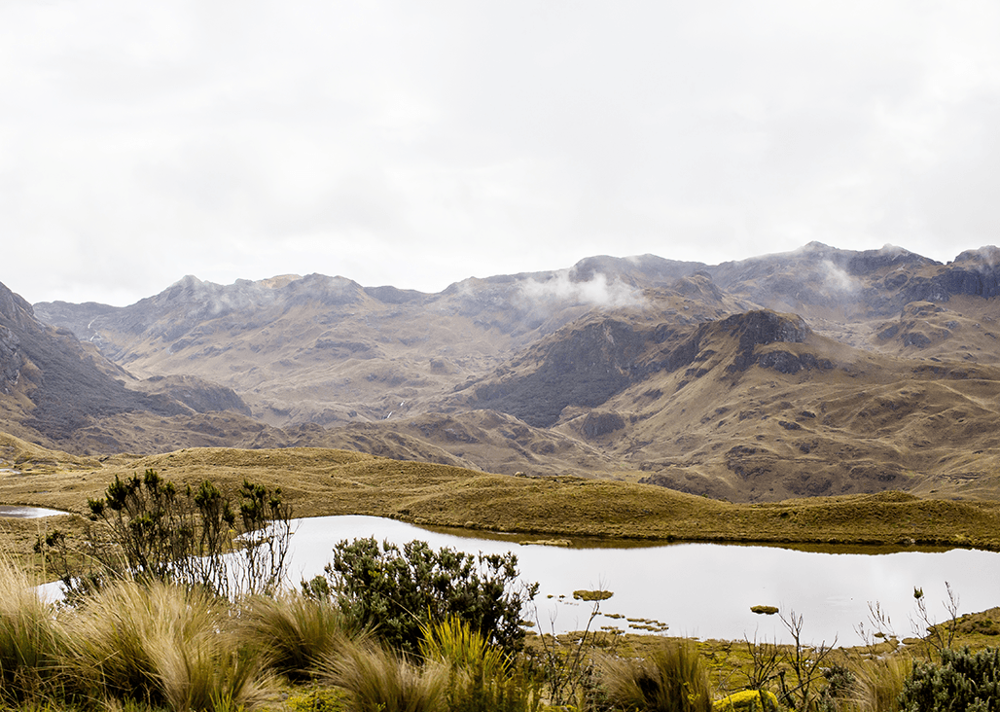

Inicia el recorrido desde bogotá tomando la vía hacia el municipio de La Calera, ubicado aproximadamente a 18 kilómetros de la ciudad. El trayecto en vehículo dura alrededor de 40 minutos, atravesando paisajes montañosos característicos de la cordillera Oriental. Al llegar a La Calera, te encontrarás con un guía local, quien dará una charla inicial donde entenderás la importancia de este ecosistema y las buenas practicas para su mantenimiento, el guia acompañará el resto del recorrido hacia el parque. Desde este punto comienza la ruta hacia las zonas de acceso a Chingaza, un camino que continúa por carreteras rurales rodeadas de bosques altoandinos y vistas naturales. Durante el trayecto, el paisaje cambia gradualmente hasta llegar a los ecosistemas de páramo que caracterizan al Parque Nacional Natural Chingaza, uno de los territorios naturales más importantes de Colombia por su biodiversidad y por ser una fuente fundamental de agua para la región.
Ana Pérez es una guía local apasionada por la naturaleza y una verdadera guardiana del páramo. Criada en las montañas cercanas al Parque Nacional Natural Chingaza, conoce profundamente este ecosistema y comparte su conocimiento con los visitantes durante cada recorrido. Comprometida con la conservación ambiental, Ana promueve el respeto por la flora y la fauna del páramo, especialmente la protección del oso andino u oso de anteojos (Tremarctos ornatus), una de las especies más representativas de la región. Su objetivo es que cada visitante comprenda la importancia de cuidar estos paisajes únicos y el papel fundamental que cumplen en la conservación del agua y la biodiversidad.